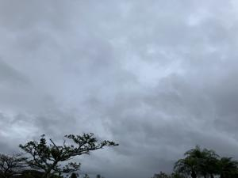
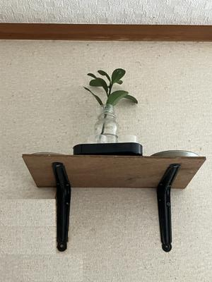
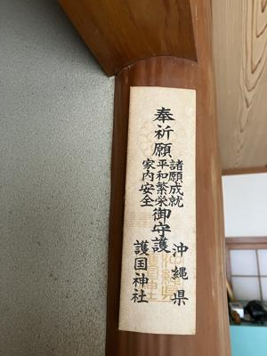

うるがいの話 ある日
最新: 紫微鑾駕（しびらんか）【うるがいの話 ある日】とは 一日だけのプログです
『うるがいの話』の最新一日だけのプログで、通信料が少なく経済的だ。カニの画像をクリックすると全ての日付が載る『うるがいの話』サイトを表示します
|
|
【うるがいの話】 うるがい(ｳﾙｶﾞｲ urugai)とは、『もずくがに』の名前でとても大きくなります。 |
|---|---|
|
|
【カミマヤーの話】 猫のことを方言でマヤーといいます。カミマヤー（kamimayaa）とは、神の猫のことです。 |
|
【たながぁの音楽】 たながぁ（ﾀﾅｶﾞｰ tanagaa）とは手長えびのことで、何種類かあり大きいのは車 エビぐらいになります。 |

|
【ぶながぁの話】 ぶながぁ(ﾌﾞﾅｶﾞｰ bunagaa)とは、赤い髪の毛、赤い身体、そして身長は１ｍ２０ｃｍ ぐらい、川の蟹を食べているの目撃された。場所は沖縄県国頭郡大宜味村のと ある村僕の隣近所に住んでいる爺さんから、聞いた話です。 |
|
|
【ギーマの話】 ギーマ(giima)とは、山原の里山に咲くスズランに似た、 花を付けます。実は食べられます、 気が付くと口の周りが紫になっています。 |
2025年03月07日 (金）紫微鑾駕（しびらんか）
15:52

カミングヮの長嶺さんが、２階の部屋の天井（あるのですよ）を開
けて、紫微鑾駕（しびらんか）があるか確認していた。板に字が書
いてあったのだが、なんで確認したのか忘れた。
沖縄では昔から家を建てた時、木の板に（紫微鑾駕）と書いて屋根
の棟木へ取り付けるお札です。
『沖縄のまじない』山里 純一／著 より-
紫微鑾駕（しびらんか）
呪語の成り立ち
「紫微鑾駕」は、「紫微」と「鑾駕」という二つの言葉が合わさっ
た用語である。「紫微」は北極星を神格化した「北極紫微大帝」と
いう神の略称（地位の高い神）である。
「鑾駕」とというのは、地位の高い神が乗る車ないしは神輿（みこ
し）などの乗り物のことである。
そのうち、自然に近くに神棚を設けた。

マンションには、シーサーが２セットあった。家にもってくるがハ
テどこに置くか・・・。
シャコガイ（アジケー）も魔除けというのが、この本に書いてあっ
た。下は、この前泊魚市場で写した生きたシャコガイである。家に
も、自分で採った３０センチほどの大きなシャコガイの殻が、あっ
たが誰かにあげたのでしょうか。今はありません。

仏壇を置いている床の間の柱には、護国神社の札を貼っています。
ハテ、どうゆう経緯で貼ったのだろう、覚えていない。

『おまじない』の本は、古本屋で紹介していたので、もしかすると
漆（うるし）のかぶれを、オバーやオジーが直してくれた呪言が載
っているかと思ったのだが、残念。いつかは、であうことを期待し
つつ探し続けるとしよう。